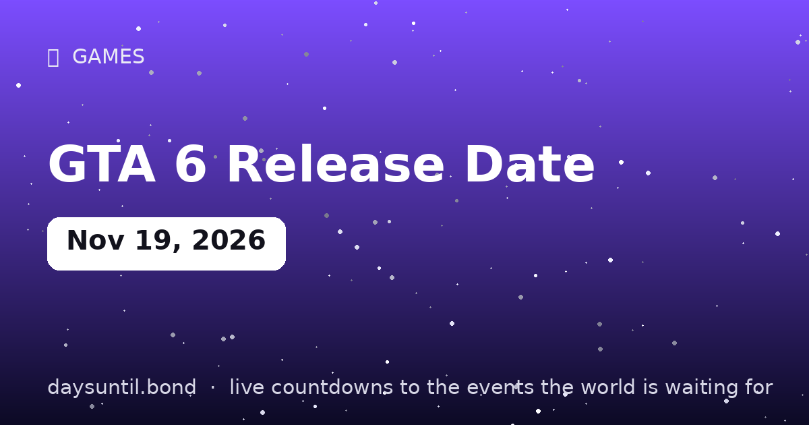

How Many Days Until GTA 6 Release Date?
GTA 6 Release Date falls on Thursday, November 19, 2026.
As of October 22, 2026: 28 days to go — 4 weeks and 0 days, 20 weekdays (8 weekend days), about 672 hours.

Quick facts
| Date | Thursday, November 19, 2026 |
|---|---|
| Days away | Live counter above |
About GTA 6 Release Date
Grand Theft Auto VI launches Thursday, November 19, 2026 on PlayStation 5 and Xbox Series X|S — after two delays (2025 → May 26, 2026 → November 19, 2026), Rockstar and Take-Two have held the date. Standard Edition $79.99, digital pre-loading from November 12; no PC date announced yet.
The most anticipated entertainment release in history — by pre-orders, it is already the biggest game ever, and the entire games industry moved its Q4 releases to get out of its way. The live counter above runs to the release/event date worldwide (local time zones may shift availability by hours).
Why the date moved twice
Grand Theft Auto VI has been pushed twice: from its original 2025 window to May 26, 2026, and from there to November 19, 2026. Both delays were announced by Rockstar Games and Take-Two Interactive, and both were framed as time to finish the game rather than as a change of scope — the second delay in particular came with an explicit statement that the remaining work was polish rather than content cuts.
The November date is significant because it is the last workable window before the company's fiscal year-end and because it positions the launch directly in front of Black Friday. Take-Two has committed to it publicly, which is the strongest available signal that it holds.
Platforms, price and pre-loading
The launch is on PlayStation 5 and Xbox Series X|S only. There is no PC release date announced — consistent with Rockstar's pattern on Grand Theft Auto V, which arrived on PC roughly nineteen months after the console version. The Standard Edition is priced at $79.99, a step up from the $69.99 that had become the PS5-generation norm, and digital pre-loading opens on November 12, a week before launch, so the download does not compete with the day-one network load.
If you are planning to buy digitally, the practical date is November 12, not November 19. If you are buying physical, the release date is the constraint.
Where November 19 sits in the 2026 calendar
The launch lands eight days before Black Friday and 36 days before Christmas, which is the densest possible retail window and almost certainly deliberate. It is also four weeks before the two biggest films of the year open on December 18, so attention competition is unusually high on both sides of the release.
For players, that overlap has a practical consequence: the first fortnight of the game will run alongside the year's heaviest discounting, so hardware — an extra controller, a headset, storage — is often cheaper two weeks after launch than on launch day itself.
What is known and what is not
Confirmed: the release date, the two console platforms, the $79.99 standard price, the November 12 pre-load, and a return to a modern Vice City setting with the series' first female lead in a main story role. Not confirmed: the PC date, any multiplayer timing, the exact file size, and most of the story specifics. Rockstar's marketing has been deliberately sparse — two trailers across more than two years — which is why the gap between confirmed and rumoured is unusually wide for a title at this scale.
What Rockstar's release pattern suggests
The studio has a consistent history of staggering platforms. Grand Theft Auto V launched on PlayStation 3 and Xbox 360 in September 2013 and reached PC in April 2015 — about nineteen months later. Red Dead Redemption 2 launched on consoles in October 2018 and on PC in November 2019, roughly thirteen months after, with a full graphical and feature refresh rather than a straight port.
Both patterns point the same way for Grand Theft Auto VI: a console-first launch in November 2026, a PC version somewhere in 2028 rather than 2027, and a next-generation upgrade that arrives with it. None of that is announced — it is inference from the studio's own record, and it is worth holding loosely.
What to do before launch day
The practical work happens on November 12, when digital pre-loading opens. Clear far more storage than you think you need — open-world Rockstar titles have historically occupied well over 100GB and grow with patches — and update your console's system software before the 19th rather than on it, because day-one patches are large and everyone downloads at once.
If you are buying a physical copy, check which edition you are ordering: the standard disc still requires a substantial day-one download. And if you are choosing between editions, the differentiator is usually in-game currency and subscription access rather than story content, which is a good test of whether the upgrade is worth the difference to you.
Vice City: what the setting means
The game returns to Vice City, Rockstar's fictionalised Miami, which last appeared as a full setting in Grand Theft Auto: Vice City in 2002 — a neon, pastel, cocaine-era take on the 1980s that is still the most-loved entry in the series by a wide margin. This version is a modern reimagining rather than a remake, with a present-day setting and the series' first female lead in a main story role.
For returning players the significance is straightforward: it is the setting the fanbase has asked for, for more than twenty years, and it is the first mainline entry since 2013. For everyone else, it is simply the reason the marketing has been so confident — the name alone carries more weight than any trailer could.
What time does it unlock?
Console launches are rarely a single global moment. Digital editions typically unlock at local midnight in each region, which means players in New Zealand and Australia start first and the Americas follow nearly a day later — the same time-zone rollover that gives New Year's Eve its twenty-six midnights. Physical copies unlock at retail opening hours instead, which in most markets is later still.
If the previous Rockstar launches are a guide, the safest plan is to pre-load on November 12, be online before your local midnight on the 19th, and expect server congestion in the first hours. The counter above runs in your own time zone, so the number it shows is the one that applies to your unlock.